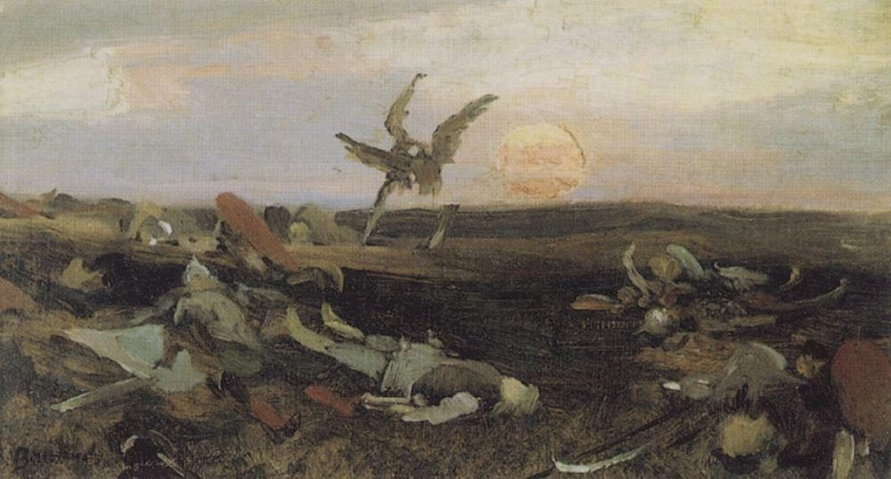
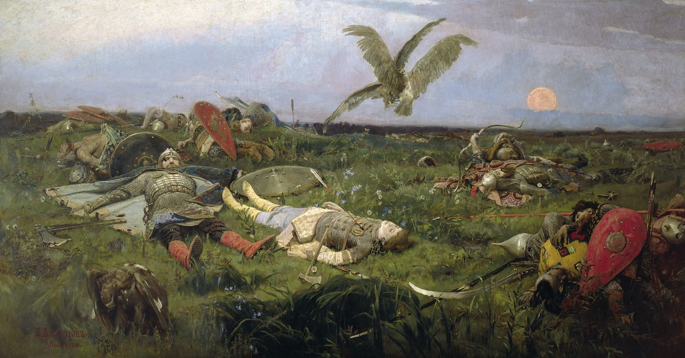

«Слово о полку Игореве» — памятник древнерусской литературы конца XII века. Это рассказ о неудачном походе новгород-северского князя Игоря Святославича на половцев в 1185 году. Имя автора история не сохранила — мы знаем только, что это был человек огромного поэтического дара.
Сюжет. Весной 1185 года князь Игорь уходит в степь воевать с половцами. В пути его настигает дурное знамение — 1 мая солнце меркнет, но князь не поворачивает. Первая стычка оборачивается победой, однако на реке Каяле русское войско терпит страшное поражение, Игорь попадает в плен. В Путивле его жена Ярославна плачет на городской стене — этот плач станет первым великим поэтическим образом Руси. В финале Игорь бежит из плена с помощью половца Овлура и возвращается домой.


Чудо находки. Рукопись в конце XVIII века разыскал граф Алексей Мусин-Пушкин: он купил сборник в Спасо-Ярославском монастыре и понял, что держит в руках бесценный памятник. Для Екатерины II сняли копию — она сохранилась. По ней подготовили первое издание: 1800 год, Сенатская типография, 1200 экземпляров под названием «Ироическая песнь о походе на половцев…».
Гибель. Единственная рукопись сгорела в пожаре Москвы 1812 года вместе с библиотекой Мусина-Пушкина. До нас «Слово» дошло чудом — через печатное издание 1800 года и рукописную копию.
Подлинность. «Слово» не раз объявляли подделкой XVIII века. Лингвист Андрей Зализняк доказал обратное: язык памятника подчиняется законам XII века, а не XVIII — сфабриковать такой текст в то время было невозможно. «Слово о полку Игореве» — подлинный памятник древнерусской словесности.
Почему это начало. До «Слова» русская письменность — это летописи, хроника событий. А здесь впервые заговорила поэзия: лирический плач, живой язык, образ, звучащий через восемь веков. С этого текста начинается русская литература.